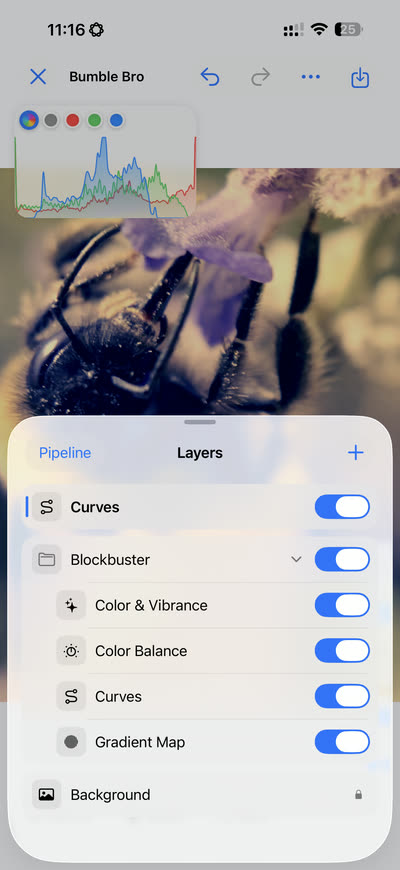
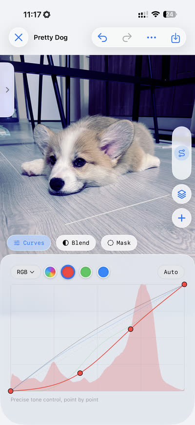
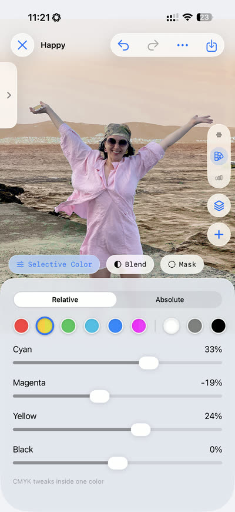
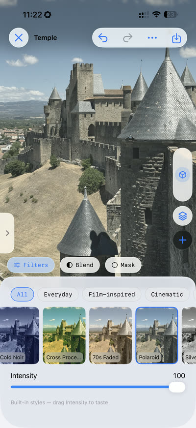

A flat capture on the left, a few layers of care on the right.
Sweep across it — in True Color, every step of that edit stays
editable, not baked in.
BeforeAfter
Left: straight off the phone, untouched. Right: the same frame, graded.
Your turn
Grade it yourself
Six layers from the editor, wired to this photo. Drag the sliders,
tap the eyes to switch a layer off, or apply a whole Look in one tap —
exactly how it feels in True Color.
Exposure0.00
Contrast100%
Hue0°
Saturation100%
Black & White0%
Dehaze0
Looks:
A taste, not the tool: the app itself goes to 26 adjustment types, masks,
Curves, and your own LUTs.
Easy to start. Hard to outgrow.
If Curves, Channel Mixer, and Selective Color are your daily tools, they’re
all here, arranged in a proper layer stack. Just starting out? Pick a filter,
move one slider, see what happens. You can’t break anything, every step is
undoable, and the deeper tools will wait quietly until you’re curious.
What’s inside
Layers, masks, Looks, and speed
Four ideas hold True Color together. Each one is precise enough for a working
pro, and plain enough to learn by moving one slider and watching the photo.
Build your edit in layers
Pick from 26 adjustment types, from Exposure and Levels to Curves, Split
Toning, and Channel Mixer. Each one lives on its own layer, so you can
reorder it, soften it, or switch it off next week. Nothing is baked in
until you export.
Touch only what needs touching
Paint a mask to keep an adjustment exactly where you want it, or use
Blend If to limit it to just the shadows or just the highlights. Brighten
a face without washing out the sky behind it. If you’ve ever dodged and
burned a print, your hands already know this.
Find your look, then keep it
Start with the built-in filters, or bring your own LUTs (.cube and .3dl).
When an edit finally feels like you, save the whole stack as a Look and
give the next photo the same treatment in one tap.
See the real photo as you drag
No postage-stamp preview, no wait and see. Move a slider and the
full-resolution photo answers instantly, so your eye stays on the
picture and you can trust exactly what you see.
Your edits, your tools and your saved Looks, all on one screen

The layer stack: your whole edit, in order, always reversible

Curves, with the real photo answering every move

Selective Color: CMYK tweaks inside one colour

Built-in filters alongside your own LUTs (.cube and .3dl)
Public beta
Join the TestFlight beta
True Color is nearly ready. Leave your email and you’ll get exactly two
kinds of mail: the occasional bit of news, and your TestFlight invitation
when the beta opens. The beta is free, and you can unsubscribe anytime.